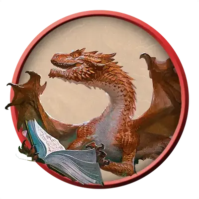

Молодой медный дракон
Young Copper Dragon
Большой Дракон (Металлический), Хаотичный Добрый

Класс Защиты 17 Инициатива +4 (14)
Хиты 119 (14к10 + 42)
Скорость 40 футов, Полёта 80 футов, Лазания 40 футов
| мод | спас | ||
|---|---|---|---|
| СИЛ | 19 | +4 | +4 |
| ЛОВ | 12 | +1 | +4 |
| ТЕЛ | 17 | +3 | +3 |
| мод | спас | ||
|---|---|---|---|
| ИНТ | 16 | +3 | +3 |
| МДР | 13 | +1 | +4 |
| ХАР | 15 | +2 | +2 |
Иммунитеты Кислота
Чувства Тёмное зрение 120 футов, пассивное Восприятие 17, Слепое зрение 30 футов
Языки Общий, Драконий
Опасность 7 (2 900 опыта; БВ +3)
Действия
Мультиатака. Дракон совершает три атаки Раздиранием. Он может заменить одну из этих атак использованием Замедляющего дыхания.
Раздирание. Бросок рукопашной атаки: +7, досягаемость 10 фт. Попадание: 15 (2к10 + 4) Рубящего урона.
Кислотное дыхание (Перезарядка 5–6). Спасбросок Ловкости: Сл 14, каждое существо в Линии длиной 40 футов и шириной 5 футов. Провал: 40 (9к8) урона Кислотой. Успех: Только половина урона.
Замедляющее дыхание. Спасбросок Телосложения: Сл 14, каждое существо в 30-футовом Конусе. Провал: Цель не может совершать Реакции, её Скорость уменьшена вдвое, а в свой ход она может совершить только действие или Бонусное действие, но не то и другое. Этот эффект длится до конца следующего хода цели.
Бонус мастерства +3
Среда обитания Холмы
Сокровища Магические
Медные драконы
Неизменно дружелюбные и любопытные, большинство медных драконов видят мир как место бесконечных чудес и возможностей. Эти общительные драконы — неиссякаемые источники терпения, гостеприимства и доброго юмора; они стремятся улучшить жизнь — или хотя бы настроение — всякого, с кем имеют дело. Если же их вынуждают защищать себя или друзей, эти драконы предпочитают усмирять недругов замедляющим дыханием и физическими ударами. Лишь в случаях крайней опасности или душевного потрясения они прибегают к смертоносному кислотному дыханию.
Обычно медные драконы обитают в пещерах средь живописных холмов и скал — особенно таких, что служат приметными ориентирами. Драконы эти принимают дары, однако питают слабый интерес к сокровищам, лишённым смысла, сколь бы ценны те ни были. Для них подарки, преподнесённые с душой, а также чувства и воспоминания, что те вызывают, куда важнее признанных шедевров и магических реликвий.
Молодые медные драконы завязывают прочные узы с неким сообществом или кругом приятелей, попутно перепархивая от одного творческого увлечения к другому.